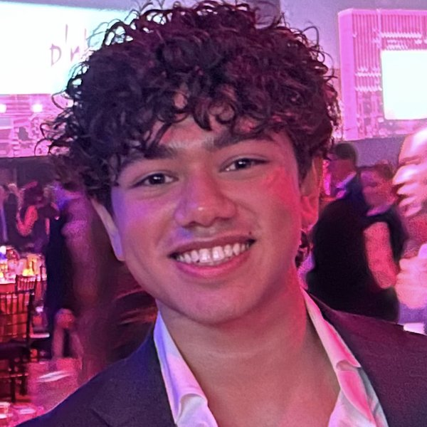
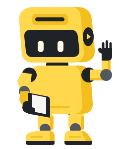

Aditya Jhalani
Founder & Program Lead
OUR TEAM
Different skills. One shared purpose: help students in grades 5–12 understand the AI around them.
Skip past the team
Founder & Program Lead
ROOM FOR YOUR SKILLS
Open volunteer roles for adults 18+. Unpaid, with a bounded scope agreed together. The program is in development and not yet open to students.
Engineering · Open seat
Guide technical decisions and mentor contributors to ship thoughtful, well-tested work.
Explore this role: Engineering leadDesign · Open seat
Own the learner experience so every lesson is clear to navigate, explore and understand.
Explore this role: Design leadAccessibility · Open seat
Set keyboard, screen-reader and access checks early, and review them before launch.
Explore this role: Accessibility leadEngineering · Open seat
Build lesson interactions and test them across devices and browsers.
Explore this role: Frontend engineer & QACurriculum · Open seat
Check lesson explanations, examples and age-appropriate learning goals.
Explore this role: Curriculum reviewerAccessibility · 2 open seats
Share lived experience to find barriers and shape lessons that work for more people.
Explore this role: Accessibility advisers
MEET OUR ROBOT
Meet our robot. It has plenty of questions and a few ideas that need testing. Sound familiar?
It’s learning how AI works, too. Learners help it try an idea, check an answer and notice when something doesn’t add up.
The goal isn’t to trust the robot. It’s to build the confidence to ask better questions and make careful choices.